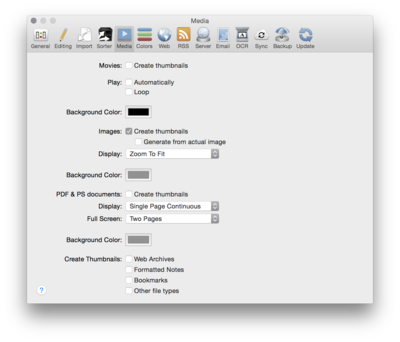

|

In the media preferences, you tell DEVONthink Pro Office how to handle multimledia files, images, PDFs and other documents for which DEVONthink Pro Office can create thumbnails.
The following options are available:
-
Movies: Check Create thumbnails if you want DEVONthink Pro Office to create thumbnails for imported or indexed QuickTime movies. Movie documents without thumbnails will appear with a generic icon, while movies with thumbnails show miniature views of their content. Check Play automatically to play QuickTime movies automatically when you display them, and check Loop if you want to play the clips in a loop. You can also choose a background color for viewing movies.
-
Images: Check Create thumbnails if you want DEVONthink Pro Office to create thumbnails for imported or indexed images. Check Generate from actual image to ignore thumbnails embedded into the image files and let DEVONthink Pro Office generate the thumbnails from the actual image. Choose a background for viewing images using the standard Mac OS X color chooser, and choose a default zoom factor.
-
PDF & PostScript documents: Check Create thumbnails if you want DEVONthink Pro Office to create thumbnails for imported or indexed PDF and PostScript files. Choose the default display mode for windowed and full screen modes and set the background color for viewing PDFs.
-
Create Thumbnails: Check Web Archives, Formatted notes, Bookmarks, or Other files if you want DEVONthink Pro Office to try to create thumbnails for these file types.
|